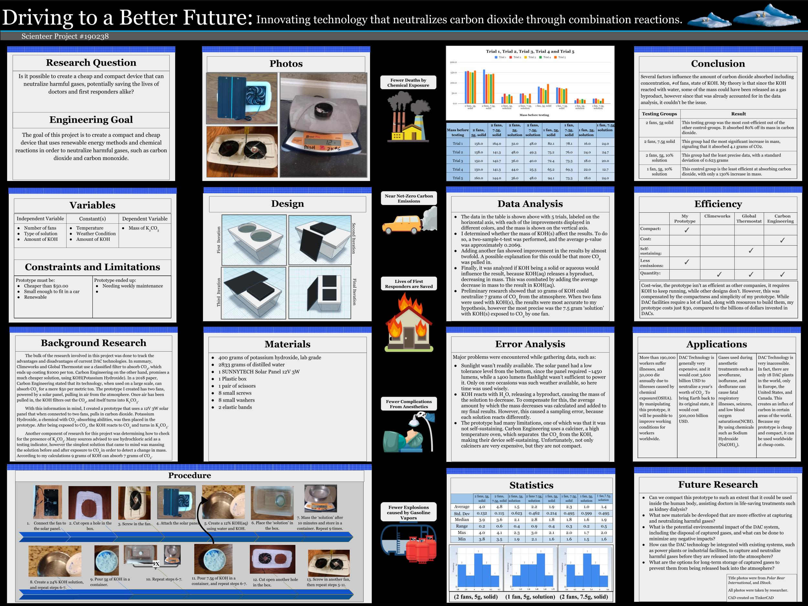

DAC Technology Innovation:

Designed $24.96 prototype (vs. million-dollar commercial systems)
- Tested KOH pellets in chemical-resistant box with solar-powered 12V fans
- Achieved 102.6% mass increase via multi-fan configuration
- Identified Calcium Oxide as cost-effective alternative to KOH
- Potential applications include: Firefighter respiratory protection (CO neutralization) and urban air purification systems